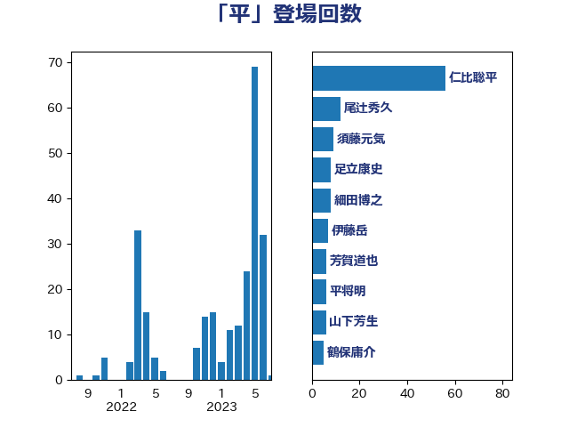

単語「平」

| 仁比聡平 | 日本共産党 | 56 回 |
| 尾辻秀久 | 無所属 | 12 回 |
| 須藤元気 | 無所属 | 9 回 |
| 足立康史 | 日本維新の会 | 8 回 |
| 細田博之 | 自由民主党 | 8 回 |
| 伊藤岳 | 日本共産党 | 7 回 |
| 芳賀道也 | 国民民主党 | 6 回 |
| 平将明 | 自由民主党 | 6 回 |
| 山下芳生 | 日本共産党 | 6 回 |
| 鶴保庸介 | 自由民主党 | 5 回 |
| 石井準一 | 自由民主党 | 5 回 |
| 猪瀬直樹 | 日本維新の会 | 5 回 |
| 末松信介 | 自由民主党 | 5 回 |
| 山田太郎 | 自由民主党 | 5 回 |
| 神谷裕 | 立憲民主党 | 4 回 |
| 中曽根弘文 | 自由民主党 | 4 回 |
| 緒方林太郎 | 無所属 | 3 回 |
| 大西英男 | 自由民主党 | 3 回 |
| 下条みつ | 立憲民主党 | 3 回 |
| 高木啓 | 自由民主党 | 2 回 |
| 阿部司 | 日本維新の会 | 2 回 |
| 長浜博行 | 無所属 | 2 回 |
| 若林健太 | 自由民主党 | 2 回 |
| 篠原孝 | 立憲民主党 | 2 回 |
| 根本匠 | 自由民主党 | 2 回 |
| 杉本和巳 | 日本維新の会 | 2 回 |
| 本村伸子 | 日本共産党 | 2 回 |
| 小沼巧 | 立憲民主党 | 2 回 |
| 天畠大輔 | れいわ新選組 | 2 回 |
| 塚田一郎 | 自由民主党 | 2 回 |
| 吉田とも代 | 日本維新の会 | 2 回 |
| 佐藤信秋 | 自由民主党 | 2 回 |
| 中谷一馬 | 立憲民主党 | 2 回 |
| 上野賢一郎 | 自由民主党 | 2 回 |
| 三浦信祐 | 公明党 | 2 回 |
| 青柳仁士 | 日本維新の会 | 1 回 |
| 阿部知子 | 立憲民主党 | 1 回 |
| 鈴木隼人 | 自由民主党 | 1 回 |
| 鈴木宗男 | 日本維新の会 | 1 回 |
| 里見隆治 | 公明党 | 1 回 |
| 西村康稔 | 自由民主党 | 1 回 |
| 葉梨康弘 | 自由民主党 | 1 回 |
| 萩生田光一 | 自由民主党 | 1 回 |
| 牧山ひろえ | 立憲民主党 | 1 回 |
| 片山さつき | 自由民主党 | 1 回 |
| 渡辺孝一 | 自由民主党 | 1 回 |
| 海江田万里 | 立憲民主党 | 1 回 |
| 河野太郎 | 自由民主党 | 1 回 |
| 杉久武 | 公明党 | 1 回 |
| 平林晃 | 公明党 | 1 回 |
| 平木大作 | 公明党 | 1 回 |
| 山口壯 | 自由民主党 | 1 回 |
| 小沢雅仁 | 立憲民主党 | 1 回 |
| 小林鷹之 | 自由民主党 | 1 回 |
| 大串博志 | 立憲民主党 | 1 回 |
| 塩村あやか | 立憲民主党 | 1 回 |
| 塩川鉄也 | 日本共産党 | 1 回 |
| 堤かなめ | 立憲民主党 | 1 回 |
| 土田慎 | 自由民主党 | 1 回 |
| 古賀友一郎 | 自由民主党 | 1 回 |
| 古賀之士 | 立憲民主党 | 1 回 |
| 加藤勝信 | 自由民主党 | 1 回 |
| 伊藤忠彦 | 自由民主党 | 1 回 |
| 中野洋昌 | 公明党 | 1 回 |
| 下野六太 | 公明党 | 1 回 |
| たがや亮 | れいわ新選組 | 1 回 |